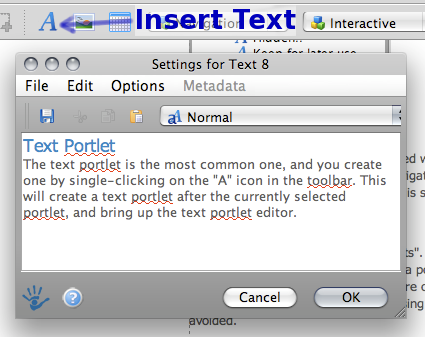

Qi4j uses Sitevision as the Content Management System and website. This is an application that Rickard Öberg wrote years ago, and where the idea of Composite Oriented Programming was first tested. The success of Sitevision's codebase directly resulted in the creation of Qi4j, and we therefor find it natural to use it as our primary documentation and website tool. Special thanks to Senselogic AB for providing us with a full license (all features).For our community members, Sitevision can feel somewhat overwhelming at first. Its features are staggering, but the basics are fairly simple and straight forward, especially if you only need to add a paragraph or create a new page. It is beyond this tutorial to go through all the features of Sitevision, and we kindly ask you to check the official site for such details. Only intend to cover the most simple bits here, so you can get started with adding and editing the content of the Qi4j website.
Sitevision is a full WYSIWYG editor, meaning it will continuously render the full HTML/CSS as it will be shown to the end consumer of the content. Yet, it is not a simple AJAX/JS editor, but a combination of Java and HTML/CSS view.
Known Compatibility
| Chromium 5
|
Yes
|
No (beta)
|
|
| Firefox 3.5
|
|
No
|
|
| Firefox 3.6
|
Yes
|
|
|
| Safari 4
|
|
Yes
|
|
| Opera 10
|
Slow
|
Yes
|
|
| Konqueror 4.4
|
No
|
|
|
Please forward known working and non-working combinations to general@lists.ops4j.org.
If you are a Content Editor, the first thing you need to do is to "Login". This is done from the menu on the left, bottom item. See screenshot below.
That will bring you to a normal Login page. Fill in your credentials (ask the browser to remember them), and you will simply be brought to home page. But there is a small but incredibly important difference. There is a green ball in the lower right corner in the browser.
This is your "entry" into Sitevision. Click on it, and you will start up the Sitevision editor. Depending on your connection speed, it may take some time, as the full Java app is downloaded to your machine. On a modern broadband it shouldn't take more than a minute. You are probably also asked to verify the application certificate for the Java applet. It should be issued by Senselogic AB.Once the editor is loaded, you get to the main Qi4j editing view.

Main Editor View
At the top we have a toolbar, populated with a set of actions, including 3 drop-down boxes of "portlets" that are available. The "Navigator" is a sitemap of how all the pages are organized, and the "Content" panel at the bottom left is showing the tree structure of the page, which can be seen on the lower right (main area).
Sitevision works with so called "portlets". This is a central concept that needs to be understood. Every piece of content is contained in a portlet. This could be a simple text, an image or something really complex like a forum. Portlets are organized in a tree structure on a page (seen in the "Content" panel), and can have enclosing layouts. Absolute positioning is supported but should be avoided.The Qi4j website designer have already provided the overall look and feel, so there is very little to worry about to make everything look Ok. When a page is created, all the L&F is in place, including a "Heading" and a "content" text paragraphs on the page.
Most portlets can be rendered during editing, although for some that is optional and turned off by default. If you move your mouse over a portlet on the right, it will be "boxed" if it can be edited, and if you double-click on it, you will open it for editing. Below is a screenshot of section from higher up on this page...
If you right-click on a Portlet, you get a context menu with various choices, such as Delete, Copy and Properties. The Properties allows you to set various rendering attributes, but should in most cases be left un-touched.A single-click will "Select" the portlet. This is important when you create a new portlet, since it will be created just after the selected portlet.
All of the above is also possible to do in the "Content" panel, for each of the Portlets. Additionally, it is possible to "Move" the portlets around by dragging it in the "Content" panel, while holding down the Shift key. Note that many/most Portlets can act as containers for other portlets.
The text portlet is the most common one, and you create one by single-clicking on the "A" icon in the toolbar. This will create a text portlet after the currently selected portlet, and bring up the text portlet editor.

Insert Text Screenshot
The text in the Text Editor can be formatted to some extent. To ensure consistent use of fonts and other factors, we work with "Styles", and the Qi4j community has only defined a small set of styles, most importantly the "Java Code", which effectively only sets the font and size. To enable the 'gray box' that surrounds code snippets, you also need to "Apply Decoration" on the portlet itself, i.e. right-click on the portlet and you find the menu choice. Select "Java Code" from the available decorations.
The creation of Image portlet is found in the toolbar next to the Text portlet. When it is invoked, a image selection editor will show up. Note that there is a "Image Archive" and a "Page Images" separately. The former is for cross-site images, whereas the latter is for images on a single page. Use your own best judgment of where images should be stored. To add an image, click on "New Image", select it from your local storage, then edit the Image description and settings.
It is beyond this introduction to go through the many available portlets and all the exact behavior of each. Go to the Senselogic website for more information.
You can create a page by either right-clicking on an existing page and selecting "New" followed by "Page", or by selecting a page and then press the "New" action in the toolbar.
This will bring up the dialog where new pages, links, archives and many other site objects can be created. You can mostly ignore these for now.What is important are the various templates that has been prepared for Qi4j. "Community" is for all pages that are not directly related to the Documentation effort. If you are writing documentation sitting under the "Documentation" page, you use that template. The others can be ignored.
While you are editing the page, it is not saved nor published.Saving the page will persist it on the Qi4j server, so we recommend you to do that "often" to avoid loosing any content in case something goes terribly wrong. You will be able to pick up and continue from the last point of Save. To save a page, click on the "Save" action in the toolbar.
There are markers on the Page icon in the Navigator panel to help you see if a page has been saved, published and is locked.To make the new page, or changes to an existing page, visible to the general public, you must also "Publish" the page, by pressing the "Publish" action in the toolbar.
Publish Action Screenshot
If the page has not been saved, you will be asked to save it first. It will then go through a small wizard, where you can select when the page should become available, if you should be notified that the content is getting stale, add additional meta data and finally make a check that the page is following W3C standards.This concludes this introduction to Sitevision at Qi4j. For more information, either check the Senselogic website or ask the Qi4j community on qi4j-dev@lists.ops4j.org. Happy Editing.